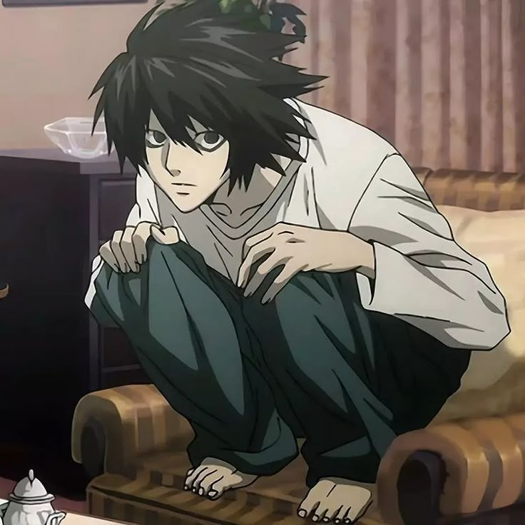
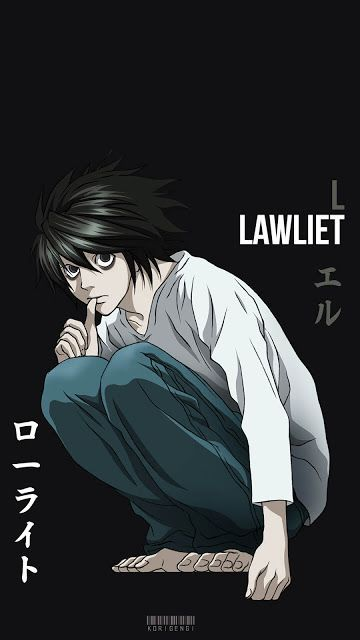
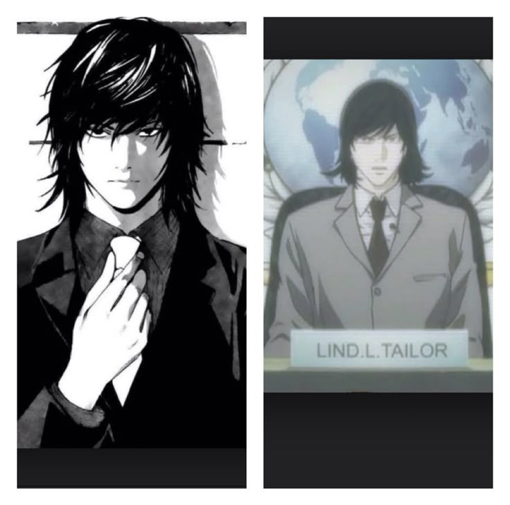
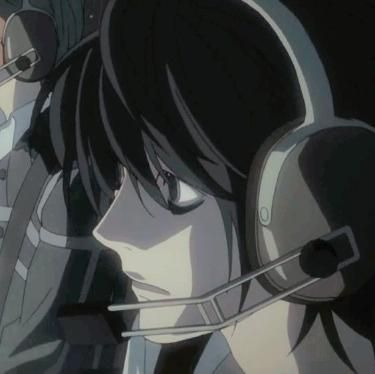
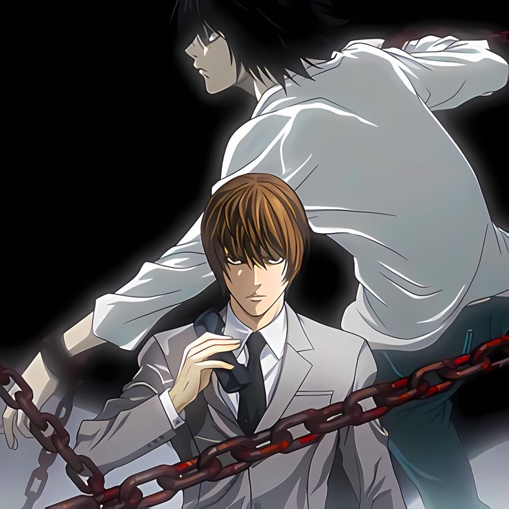

L Lawliet
Death Note is more than just a tale of supernatural justice—it's a cerebral chess game played between two brilliant minds. At the center of this intellectual contest stands L, the enigmatic detective whose unconventional methods, razor-sharp intuition, and unparalleled deductive skills provide the backbone of the investigation into Kira. L's involvement in the case transcends routine policing, engaging instead in a relentless pursuit of moral clarity amidst a backdrop of ambiguity and moral sacrifice.
Who is L Lawliet?
From the moment mysterious deaths begin to plague the criminal underworld, L emerges as the world’s most formidable detective. Unlike conventional law enforcement who rely on physical evidence and standard procedures, L positions himself as a thinker—a strategist who looks beyond the obvious. His approach to the investigation into Kira is characterized by an unwavering commitment to logic and observation. With an eccentric disposition that includes a peculiar fascination with sweets and a habit of sitting hunched over, L’s outward quirks belie the extraordinary analytical acumen he possesses. This combination of unconventional behavior and methodical genius allows him to interpret patterns and anomalies in the data surrounding Kira's killings, setting him apart as a detective who operates on intuition as much as it does on science.
The brain behind the operation
One of L's most significant contributions to the Kira investigation is his radical rethinking of what constitutes evidence. In a case where supernatural elements intertwine with human action—given that the deaths executed by Kira stem from a notebook with otherworldly properties—L refuses to be swayed by mere mystery. He systematically deconstructs the pattern of deaths, realizing that beneath the veneer of inexplicable occurrences lies human intention and logic. By methodically analyzing the timing of incidents, the locations, and the behavioral patterns of both the suspects and the victims, L begins to piece together a profile that is as much psychological as it is statistical. This analytical approach forces everyone, including his colleagues and Kira himself, to reckon with the idea that behind the mask of divine retribution may be the calculated work of a single, brilliant human being.
Executing the executioner
As the investigation intensifies, L’s methods evolve into a high-stakes psychological duel with Kira—a duel that reshapes the narrative into a battle of wits. Through careful manipulation of information and strategic leaks, L begins to bait Kira into revealing subtle hints about his identity. L’s strategy revolves around setting traps that rely on the suspect's inevitable need to cover his tracks. By using his encyclopedic knowledge of human behavior and criminal psychology, he designs scenarios where Kira's responses become the key indicators of his true identity. For example, L orchestrates situations that force Kira to respond in ways that betray his carefully crafted persona. Each move in this intellectual standoff is calculated, crafted to probe deeper into the mind behind the killings. The result is a dynamic interplay where both the detective and the criminal continuously adapt, each trying to outsmart the other while navigating a labyrinth of moral complexities.
L’s ability to bridge the gap between psychological insight and forensic investigation is one of his most defining traits. He understands that capturing Kira is not solely about amassing physical proof but about unraveling the intricate tapestry of a mind bent on a warped version of justice. His investigative techniques often involve subtle psychological tests that force potential suspects to reveal their inner motivations. In his interactions with law enforcement and even those marginally connected to Kira. L demonstrates an uncanny ability to detect lies, spot inconsistencies, and read body language—all skills that help him narrow down the field of suspects. This emphasis on psychological profiling not only enhances the pursuit of a criminal shrouded in mystery but also challenges the very notion of justice in a world where the lines between right and wrong are blurred.
Beyond the technical facets of his investigation lies the deeper philosophical engagement that L brings to the narrative. He is constantly at odds with the central question of Death Note: Who truly has the right to judge and execute justice? L’s relentless determination to apprehend Kira is driven not only by a desire to stop a spree of killings but by an underlying need to reaffirm the moral order of society. In many ways, his role becomes that of a guardian against the descent into nihilism that Kira’s actions represent. While Kira rationalizes his mass executions as a means to cleanse society of its corrupt elements, L’s pursuit underscores a stark opposition—a defense of the inherent imperfections of humanity and its right to self-determination. His intellectual resilience in the face of moral corruption challenges viewers and readers to question whether absolute justice is ever attainable without sacrificing the very essence of human freedom.
The legacy of L’s involvement in the Kira investigation is multifaceted. Though his journey is marked by personal sacrifice and the cost of perpetual vigilance, his contributions reverberate long after his physical presence is diminished. L redefines detective work by instilling an element of introspection and methodological daring into the process of criminal investigation. His tactics—ranging from psychological profiling to orchestrated traps—have influenced fictional portrayals of detectives worldwide, shifting the focus from brute force to the cerebral art of deduction. In doing so, he leaves behind a template for understanding crime as a manifestation of the complex interplay between human nature and the allure of vigilante justice.
In conclusion, L’s inexhaustible determination, unorthodox methods, and philosophical introspection make him one of the most compelling characters in Death Note. His involvement in the battle against Kira is not merely a procedural endeavor but an intellectual confrontation that forces both characters and the audience to grapple with the nuances of justice and morality. L’s legacy, filled with ambiguity and brilliance, serves as a reminder that sometimes the most profound battles are fought not with physical might, but with the power of logic, insight, and the unyielding quest for truth. His inevitable clash with Kira remains one of the most exhilarating narratives in modern literature—a testament to the enduring power of the human mind when faced with the challenge of restoring balance in a world teetering between order and chaos.